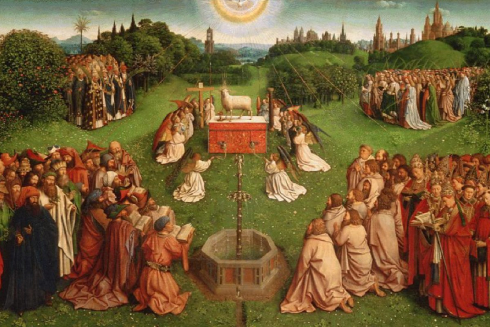

西敏小要理问答(第53-56问)

温习（42-44问）

- 问50：第二诫吩咐我们做什么？
- 答：第二诫吩咐我们要领受、遵从神在圣经中所规定一切有关崇拜的规则1，并保守其纯全与完整2。
- 问51：第二诫禁止我们做什么？
- 答：第二诫禁止我们用任何图像、样式来敬拜神1，或用圣经所未规定的任何方式敬拜祂2。
- 问52：第二诫告诉我们什么理由，使我们遵守这诫？
- 答：我们当守第二诫，因为「我耶和华──你的神是忌邪的神」，所以惟独神在我们身上有主权──我们是祂的子民、祂的产业1；并且神切切要我们专心敬拜祂2。
问53：第三诫是什么？
- 答：第三诫是：「不可妄称耶和华──你神的名；因为妄称耶和华名的，耶和华必不以他为无罪」（出廿7）。
- 略解：这条诫命告诉我们当如何使用神的名。祂的「名」就是指一切有关祂的称呼，或特别为人所熟知的称号。妄称神的名，就是无意义或轻浮地使用神的名；一些亵渎神的发誓，或不恭敬地使用神的名，都违反了这诫。
延伸讨论问题（问53）：
- “妄称耶和华的名”在今天有哪些常见的表现？
- 为什么神如此看重祂自己的名，甚至将“不可妄称祂的名”作为十诫之一？这告诉我们关于神的什么属性？
问54：第三诫吩咐我们做什么？
- 答：第三诫吩咐我们当存圣洁、敬畏的心使用神一切的名字1、称号2、属性3、法则4、圣经的话5，和祂一切的作为、工作6。
- 略解：第三诫吩咐我们，要以恭敬、虔诚的态度称呼：（一）神的名（例如：耶和华）；（二）祂的称号（例如：万王之王）；（三）祂的属性（例如：圣洁）；（四）法则（例如：祷告）；（五）祂的话或圣经；（六）祂的工作（例如：人）。
- 1 诗廿九2。2 诗六八4。3 启十五4。4 传五1。5 诗一三八2。6 伯卅六24。
延伸讨论问题（问54）：
- 我们如何在祷告、唱诗或日常交谈中，具体地做到“存圣洁、敬畏的心”使用神的名、称号和属性？请举例说明。
- 问答提到要敬畏地使用神的“法则”（例如：祷告）和“工作”（例如：人）。这在实际生活中意味着什么？我们如何可能在这些方面妄称神的名？
问55：第三诫禁止我们做什么？
- 答：第三诫禁止我们亵渎、妄用神借以彰显祂自己的任何事物1。
- 略解：第三诫禁止我们不恭敬地、错误地使用任何神的名，或特别是用以表达、宣扬神的事物。每一件与祂有关的事物都应该是庄严神圣的。
- 1 玛二2。
延伸讨论问题（问55）：
- 除了言语上的亵渎，还有哪些行为可以被看作是“妄用”神借以彰显祂自己的事物？（例如：利用基督徒的身份谋取不当利益，或者曲解圣经来支持自己的错误行为）
- 在教会生活中，我们可能会在哪些方面不经意地“妄用”了与神有关的事物？（例如：把敬拜当作一种形式，或者轻率地对待圣餐）
问56：第三诫告诉我们什么理由，使我们遵守这诫？
- 答：我们当守第三诫，因为这诫告诉我们：凡干犯它的人，虽能逃避人的刑罚，但主我们的神决不容他逃脱神公义的审判1。
- 略解：这里特别警告我们，人虽允许我们犯这诫而不罚我们，但神决不这样，祂不会不审判我们的。
- 1 申廿八58-59。
延伸讨论问题（问56）：
- 为什么神要特别强调，就算人间的法律不惩罚妄称祂名的人，祂自己也“决不容他逃脱”审判？这如何显明神的公义和圣洁？
- 这个警告对基督徒来说，是带来恐惧还是敬畏？它如何激励我们更认真地看待自己的言语和行为？